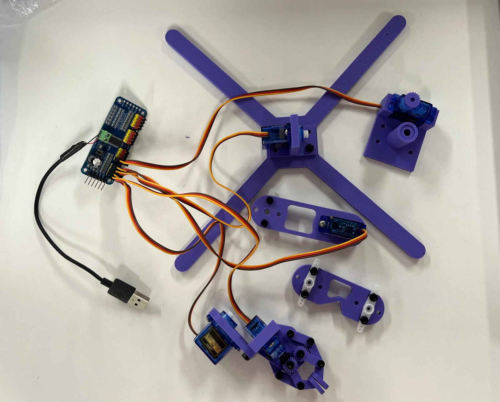
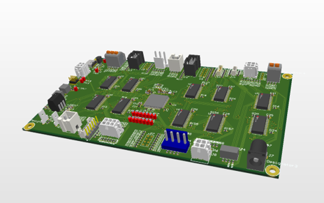
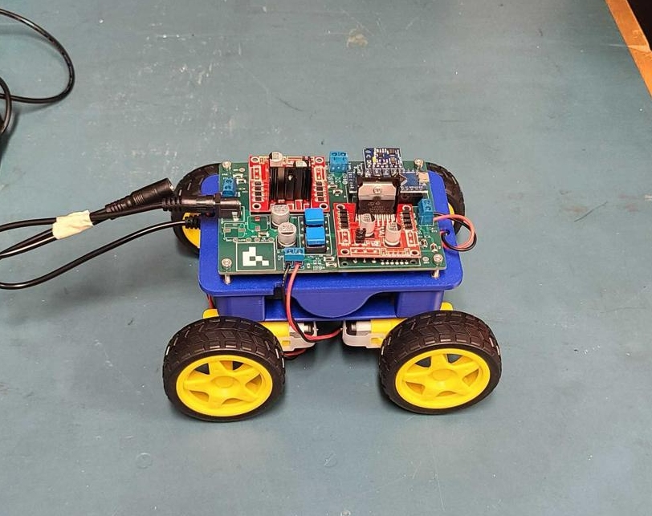

01 OngoingPERSONAL PROJECT
Robotic Arm
Developing a custom 5DOF hardware platform for exploratory learning in robotic manipulation.
MECHATRONICS ENGINEERING
Engineering student building at the intersection of mechanical design, electronics, robotics, and automation.
SELECTED WORK
A selection of mechanical, electrical, robotics, and manufacturing projects from university and industry.

01 OngoingPERSONAL PROJECT
Developing a custom 5DOF hardware platform for exploratory learning in robotic manipulation.

02QIDNI LABS · HARDWARE ENGINEERING
Designed and implemented the first stage of an electrical and firmware testing platform.

03 2ND WORLDWIDEIEEE EMC-SPI · STUDENT COMPETITION
Designed a lightweight instrumented car and gripper system for robotic EMC measurements.
 04
04
KARDIUM · MECHANICAL ENGINEERING
Designed a fully pneumatic system to replace a manual agitation cleaning process.
 05
05
KARDIUM · MECHANICAL ENGINEERING
Redesigned and validated a test jig capable of accurately applying controlled vacuum pressure.
 06
06
KARDIUM · MECHANICAL ENGINEERING
Designed a mobile pneumatic pumping system for filling and emptying up to 20L of liquid.
 07
07
KARDIUM · MECHANICAL ENGINEERING
Designed three variations of a test fixture for connecting to individual catheter electrodes.
 08
08
MTE100 · MECHATRONICS PROJECT
Built a robotic weaving system integrating three distinct motion mechanisms.
Watch video → 09
09
KARDIUM · MANUFACTURING
Manufactured aluminum and Delrin components using a manual mill and workshop equipment.
TECHNICAL TOOLKIT
CAD, mechanisms, fixtures, prototyping, 3D printing, and design for manufacturing.
PCB design, embedded hardware, sensors, motor control, and prototyping.
Software and controls development for embedded and robotic systems.
Hands-on manufacturing experience spanning machining, fabrication, and prototyping.
ABOUT
04I'm a Mechatronics Engineering student interested in problems that sit between mechanical, electrical, and software engineering.
My projects span robotics, PCB design, pneumatic systems, test fixtures, manufacturing, and mechatronic systems.
GET IN TOUCH
Interested in my work or want to discuss an engineering opportunity?